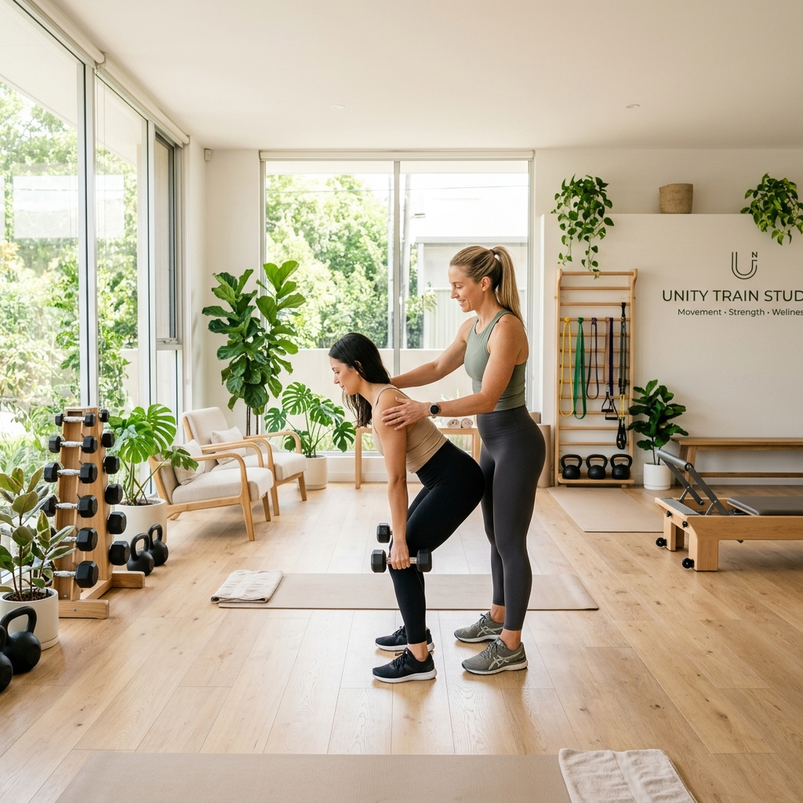
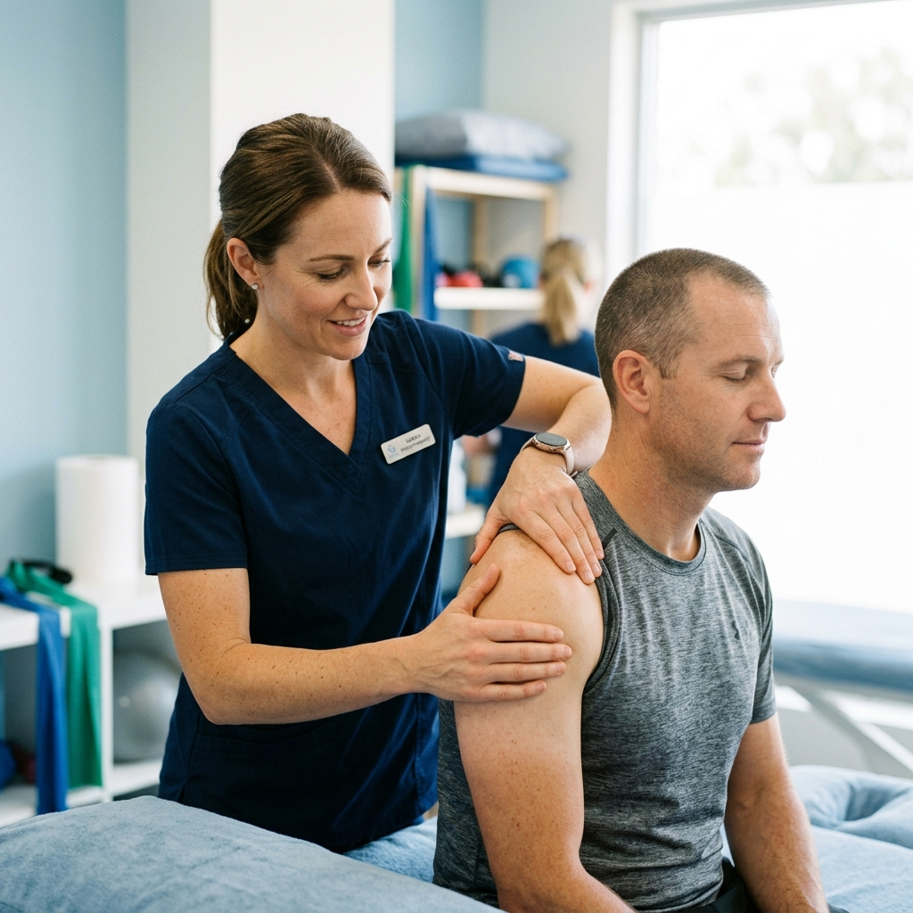
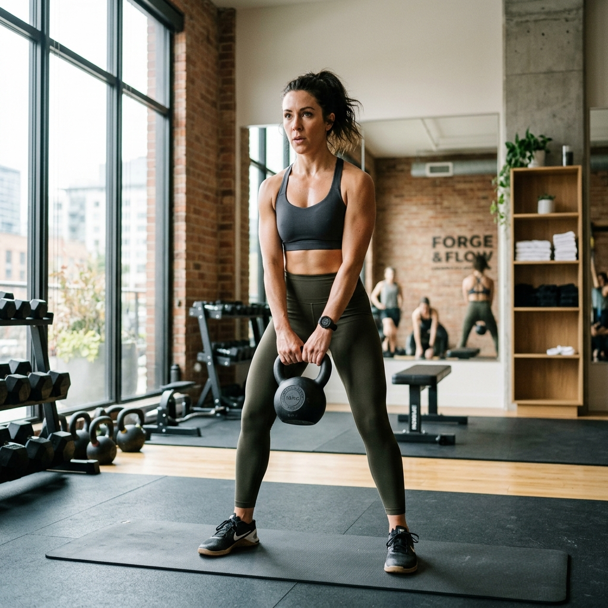

O serviço ideal para quem quer resultados com a máxima segurança. Em vez de te passarmos uma folha genérica com exercícios, estamos a teu lado em cada momento.
Fazemos uma avaliação inicial para entender o teu corpo e as tuas rotinas. Irás aprender a executar cada movimento de forma correta, respeitando os teus limites e ultrapassando as tuas barreiras, sempre ao teu próprio ritmo.
Saber condições

Não normalizes viver com dor. Se tens um desconforto constante, sofreste uma lesão ou precisas de recuperar a tua mobilidade, a nossa abordagem atua na raiz do problema.
Através de terapia manual combinada com exercício clínico especializado, ajudamos o teu corpo a reabilitar-se, para que possas voltar a fazer as tuas tarefas diárias com toda a naturalidade.
Agendar consultaMuitas vezes, tudo o que precisamos é de voltar a sentir energia no final do dia. Os nossos treinos de fitness são pensados para melhorar a tua saúde cardiovascular e aumentar a tua força estrutural.
É o passo perfeito para quem quer abandonar o sedentarismo e começar a gostar de ser fisicamente ativo, num ambiente onde o foco não são os espelhos, mas sim o bem-estar.
Começar agora
A primeira fase é sempre uma conversa connosco, onde identificamos o que realmente precisas e qual a melhor opção para o teu caso.
Falar com a equipa